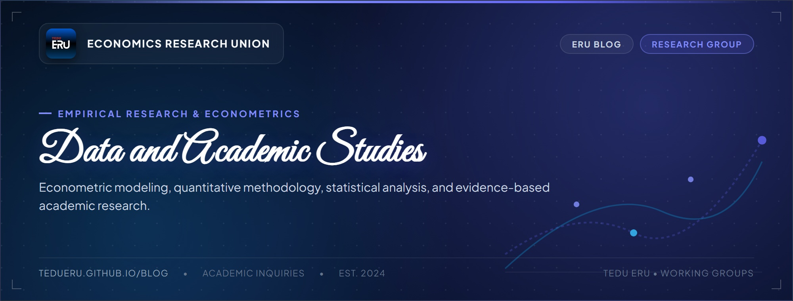
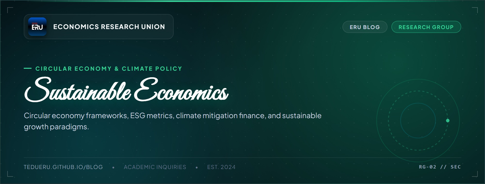
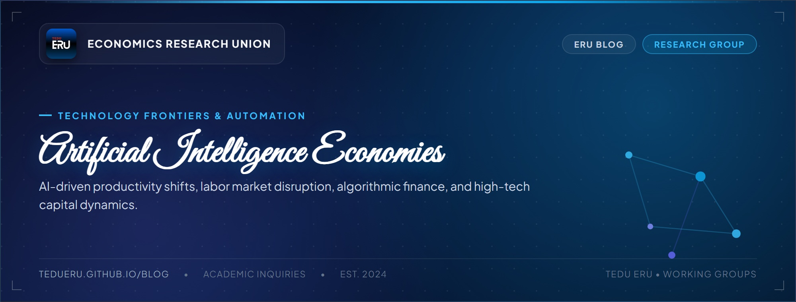
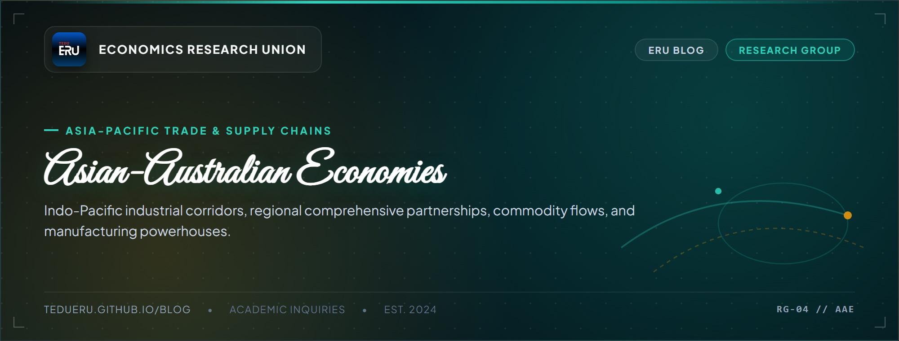
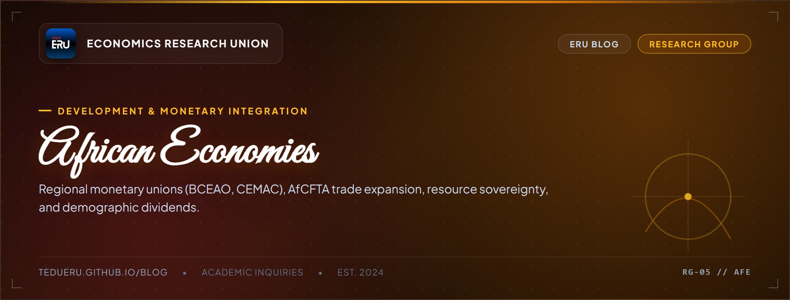
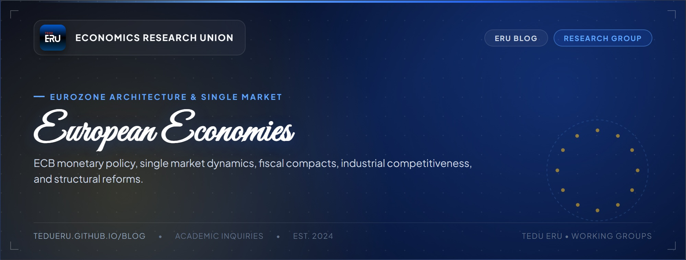
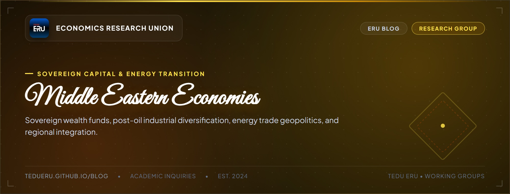
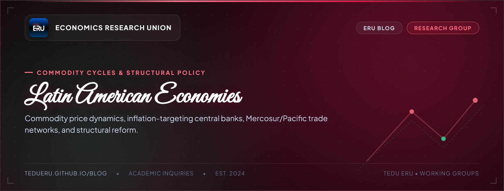
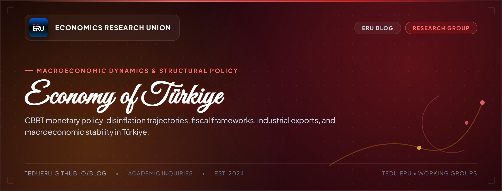
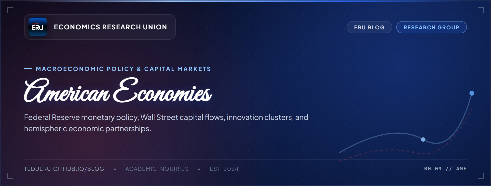

TEDU ERU · Working Groups
Student-led research clusters producing empirical commentary, data modeling, working papers, and specialized economic analysis across 10 key thematic and regional domains.
Uygulamalı & Veri
Ekonometri, döngüsel ekonomi ve yapay zeka piyasaları üzerine çalışan gruplar.
Bölgesel Ekonomiler
Türkiye, Avrupa, Asya, Afrika, Orta Doğu ve Amerika ekonomileri odaklı bölgesel analizler.
Working Paper Series & Articles
İlgilendiğiniz araştırma grubunu inceleyebilir, yakında yayınlanacak araştırma yazılarını ve çalışma notlarını buradan takip edebilirsiniz.

Econometric modeling, quantitative methodology, statistical analysis, and evidence-based academic research.

Circular economy frameworks, ESG metrics, climate mitigation finance, and sustainable growth paradigms.

AI-driven productivity shifts, labor market disruption, algorithmic finance, and high-tech capital dynamics.

Indo-Pacific industrial corridors, regional comprehensive partnerships, commodity flows, and manufacturing powerhouses.

Regional monetary unions (BCEAO, CEMAC), AfCFTA trade expansion, resource sovereignty, and demographic dividends.

ECB monetary policy, single market dynamics, fiscal compacts, industrial competitiveness, and structural reforms.

Sovereign wealth funds, post-oil industrial diversification, energy trade geopolitics, and regional integration.

Commodity price dynamics, inflation-targeting central banks, Mercosur/Pacific trade networks, and structural reform.

CBRT monetary policy, disinflation trajectories, fiscal frameworks, industrial exports, and macroeconomic stability in Türkiye.

Federal Reserve monetary policy, Wall Street capital flows, innovation clusters, and hemispheric economic partnerships.
Yazı Yayınlama & Katkı
TED University bünyesinde ekonomiye ilgi duyan tüm öğrenciler ve araştırmacılar, bu 10 araştırma grubundan biri kapsamında yazı, analiz veya araştırma notu yayınlayabilir.